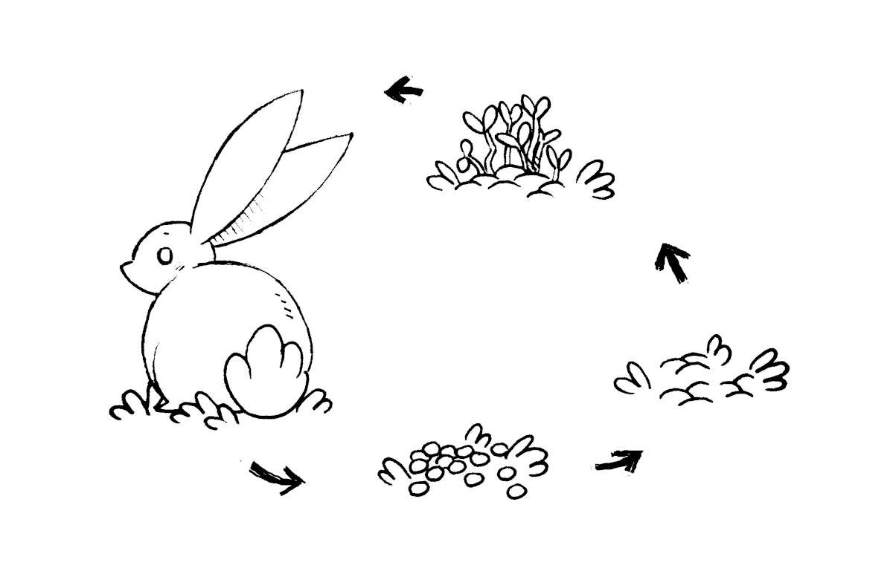

waste
Waste is always a tricky topic for boaters, because it’s something you’ve got to deal with. Keeping surrounding waters clean and free of contaminants is important. We carry garbage with us(sometimes for 4-5 months) until we can dispose of it responsibly. Aside from garbage, the primary environmental concern with waste is sewage. Urine is somewhat sterile, but feces which contain bacteria, pathogens, and nutrients, and should not go overboard.
Human urine and ocean water are mainly water, sodium and chloride ions. One compound found in urine that is not found in the ocean is urea, a carbon-based compound that helps the body rid itself of nitrogen. The nitrogen in urea combines with ocean water to produce ammonium, a compound that acts as food for ocean plant life.
Most sailboats have marine heads that use either fresh, or salt water. They can be powered, or make use of manual hand pumps to suck in water to evacuate sewage. Typically, the head is routed through a 3-way valve (Y valve) that can be switched to empty directly overboard by way of a thru-hull, or into a holding tank. A macerator lies between the tank and thru-hull, its job is to break up the sewage into tiny particles.
We don't recommend a fresh water head on a boat. Flushing with fresh water accounts for nearly a third of household water consumption, and that doesn't make sense in a small space. All onboard tankage ought to be used for cooking, washing or drinking. Marine heads that use sea water are better, although they will require more maintenance.
The word waste doesn’t exist in nature. Waste is not a word fit for the 21st century and the ecological society we’re trying to build. We are the only animal that deliberately mixes water with our own waste. That’s important because you create such a treatment issue to clean that water up. It’s ecological insanity.Fin Jordão
A holding tank may only be emptied, from at least, 3 miles from shore. Pump-out stations will help you get rid of sewage, but are only available near a handful of cities.
A dry toilet is a good option for those who do not want to haul anchor and head offshore to flush their tank. A dry toilet separates liquids and solids. Solids are mixed into a medium that will wick up moisture, eliminating smells. Having a dry toilet aboard frees up much-needed space. It also means no holding tank to empty, no smelly hoses to unclog, and little to no maintenance. You can build your own dry toilet or buy one of the many models on the market. On the market most dry toilets are referred to as 'composting heads' despite the fact that they are not designed for true, full composting onboard. Humanure needs 12-24 months to become pathogen free, and few sailboats have the carrying capacity for this. Read more about dry toilet systems on boats.
See our dry toilet installation.